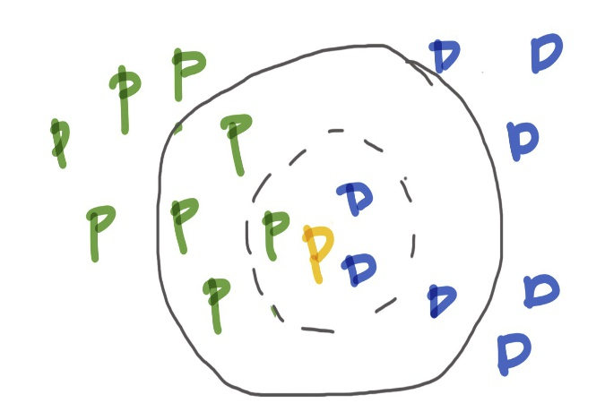

OCRBot Gets Attached

tl;dr: Chatterbots are trending bigtime! Here, we continue the story of OCRBot, a word recognizing chatbot. OCRBot's new ability to get image text from attachments is revealed (adding to it's existing ability to take image web links). So, we can snap a picture of some text and OCRbot finds the words. This could lead us into even more exciting realms like text to speech or translation.
Posted: 2017-03-01
For OCR, commonly a k-nearest neighbors classifier is used for character recognition
For the first two stories, see Part 1 and Part 2.
What's the wow factor?
Have you ever just wanted the text extracted from, perhaps a page in a book or a funny comic that's sitting around in an image? Or maybe it'd be helpful to take a snapshot of a menu item wherein the font is a bit too small or you forgot your reading glasses, however, it's easy to read on your phone as plain text. Now, if you send the OCRBot an image (jpeg, png, gif, bmp are its known formats), on one of its supported conversational platforms like Skype or Slack, you'll get that text you crave.

OCRBot on Skype - using a photo I just took of my favorite coaster sitting on my coffee table currently
This is not only fun and useful it could be the precursor to adding text to speech, or TTS, to the bot itself as we've got a Cognitive Servies API for that (Bing Speech). You can, of course at this point even, pipe this text into one of your TTS apps already on your device.
(Re)Introducing OCR
OCR, or optical character recognition, is the electronic or mechnanical recognition of text in images and the conversion into machine-encoded representaions. The text could be handwritten, typed or printed. The data is an image such as scanned passports or financial data, business cards, postal mail, or any document as an image that someone wishes to digitize.
Sometimes, OCR uses the human mind as the intelligence algorithms. An example is the use of reCAPTCHA as a crowdsourcing effort for a two-fold purpose: verification that the entity logging in somewhere is not a bot and crowdsourcing the recognition of hard to read text for the archiving of say 13 million articles from the NY Times starting with articles from 1851 which was accomplished in 2011 along with all of the books on Google Books.
OCR is performed through pattern recognition with components often pulled from AI and computer vision. The process usually takes the form of: pre-processing (fixing skew, noise reduction, conversion to black-and-white, and the like) - see figure below; character or word recognition through feature extraction and, often, a k-nearest neighbors classification (see figure below), one of the simplest of ML algorithms; post-processing such as validation through seeing co-occurrences of words (words that usually go together like "ice cream" instead of "ice pizza"). See the Wikipedia article on OCR for more.
In the Cognitive Services OCR, we have the idea of word detection within bounding boxes, combining pre-processing and several ML algorithms such as the feature extraction mentioned above, another set of algorithms for classification (including convolutional neural networks) and validation through simillar means as above, plus using a vocabulary and other techniques.
Pre-processing example:

An example of image pre-processing for character recognition: fixing skew, binarisation, despekling, and line removal
k-nearest neighbor example:
Classifying the orange letter as a blue D or green P. Note, that if k is 3, the orange letter is classified as a blue D, but with a k of 7 it is classified as a green P. The structure of the data can cause for a tricky problem in k-NN
Nowadays, especially on devices like smart phones, the OCR model used to do this conversion to text is done in the cloud through an API. This is how the Computer Vision API for OCR under the Cognitive Services umbrealla on Azure gets it done.
And for those who like a little history, note that OCR was known to be used in devices as early as 1914 with Emanuel Goldberg's invention of a machine that could read characters and convert them into standard telegraph code like Morse code (see this Wikipedia article for more history). Skip ahead to today and we have optical word recognition (commonly called OCR) used for typewritten text and others like intelligent character recognition (ICR) for handwritten or cursive text.
How has OCRBot's code changed
From the original OCRBot
OCRBot began with the ability to take a web link of an image with text and give us back the actual text in Post 1. Now we've updated OCRBot quite a bit to also accept images as attachments to the conversation.
Simply check out the server.js at github link here for the new changes to OCRBot of which there are quite a few. Certainly an overhaul of sorts, one of which was the incorporation of promises...
A Promise...
What is a Promise? Let's start with a promise of a promise that I like (ok, I had to go there) from an article by Marc Harter found here.
Promises are a compelling alternative to callbacks when dealing with asynchronous code. [...] Callbacks are the simplest possible mechanism for asynchronous code in JavaScript. Unfortunately, raw callbacks sacrifice the control flow, exception handling, and function semantics familiar from synchronous code. Promises provide a way to get those things back.
See this article if you are unfamiliar with the meaning of asychronous.
Key concepts (don't worry if this doesn't quite make sense yet) of a promise are as follows (paraphrased from info in Harter's article).
- A
promise(one way to think about them), is a value representing an asynchronous operation that is only fufilled once, either being resolved or rejected (we'll see in code soon). then, a reserved word for promises, allows anyone with access to the promise to be able to consume it regardless of if the asynchronous operation is done or not. One way to think about them is as a function which unwraps the asynchronous operation's result from the promise.thenreturns a promise.catchis often used after athen, series ofthens, or some nestedthens to handle errors both implicitly and explicitly if the ned arises.- We can still use
returnto model syncrhonous functions by returning a promise or any other value that and then signaling the nextthen, possibly giving this value to the nextonFufilled. onFufilledandonRejectedare the callbacks and handlers thatthenhandles to signal what to do with the results of a promise.
Here's a simple representation in code of the logic changes a promise provides.
var promise = readFile()
promise.then(console.log, console.error)
In this example, readFile does, in fact, need to return a promise. This object can now be used with any then that has access to the promise. You'll notice that the then has two bits to it. If the promise is fufilled in readFile the first (console.log) chunk of code is called, and if rejected, the second chunk is called (console.error).
We can create raw promises in the following way. In this example, we are using the fs library's readFile method, using reject to pass on the result of the promise in the case of an error, and resolve if it is fufilled or simply not rejected, wrapping all of this up in a function which returns the promise to be used by a then. Then, the next then that consumes this promise-returning function "unwraps" that logic.
function readFileAsync (file, encoding) {
return new Promise(function (resolve, reject) {
fs.readFile(file, encoding, function (err, data) {
if (err) return reject(err) // rejects the promise with `err` as the reason
resolve(data) // fulfills the promise with `data` as the value
})
})
}
readFileAsync('myfile.txt').then(console.log, console.error)
In a similar way, the OCRBot's code now includes promises and this looks like the raw promise above with the clever use of a catch to catch any unhandled errors and give some information back to the app and user.
var fileDownload = new Promise(
function(resolve, reject) {
var check = checkRequiresToken(msg);
if (check==true) {
resolve(requestWithToken(attachment.contentUrl));
} else {
resolve(request_promise(attachment.contentUrl));
}
}
);
fileDownload.then(
function (response) {
readImageText(response, attachment.contentType, function (error, response, body) {
session.send(extractText(body));
});
}).catch(function (err, reply) {
console.log('Error with attachment: ', {
statusCode: err.statusCode,
message: err });
session.send("Error with attachment or reading image with %s", err);
});
Promises are quite amazing, leading to resolving many issues around Node.js code such as too many nested callbacks (aka "callback hell") and clean error handling. I hope you got a bit of that enthusiasm from reading through this section.
The end of this chapter and OCRBot's next adventure
I'm actually not sure what will be in store for OCRBot next. There are so many fantastic "smarts" we could add or clever functionality. It'll have to wait and be revealed when OCRBot returns to this blog.